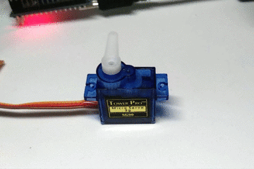

Codigo del servomotor
// Incluímos la librería para poder controlar el servo
include
// Declaramos la variable para controlar el servo
Servo servoMotor;
void setup() {
// Iniciamos el monitor serie para mostrar el resultado
Serial.begin(9600);
// Iniciamos el servo para que empiece a trabajar con el pin 9
servoMotor.attach(8);
}
void loop() {
// Desplazamos a la posición 0º
servoMotor.write(0);
// Esperamos 1 segundo
delay(1000);
// Desplazamos a la posición 90º
servoMotor.write(90);
// Esperamos 1 segundo
delay(1000);
// Desplazamos a la posición 180º
servoMotor.write(180);
// Esperamos 1 segundo
delay(1000);
}
